|
Tinker-HP v1.3
|
|
Tinker-HP v1.3
|
Go to the source code of this file.
Functions/Subroutines | |
| subroutine | nblist (istep) |
| constructs and maintains nonbonded pair neighbor lists for vdw and electrostatic interactions More... | |
| subroutine | mlistcell |
| "mlistcell" performs a complete rebuild of the electrostatic neighbor lists for multipoles using linked cells method More... | |
| subroutine | mlistcell2 |
| performs a complete rebuild of the short range and regular electrostatic neighbor lists for multipoles using linked cells method More... | |
| subroutine | initmpipme |
| build the arrays to communicate direct and reciprocal fields during the calculation of the induced dipoles More... | |
| subroutine | reinitnl (istep) |
| get the number of particules whose nl has to be computed and the associated indexes More... | |
| subroutine | clistcell |
| performs a complete rebuild of the electrostatic neighbor lists for charges using linked cells method More... | |
| subroutine | clistcell2 |
| performs a complete rebuild of the electrostatic short range and regular neighbor lists for charges using linked cells method More... | |
| subroutine | vlistcell |
| "vlistcell" performs a complete rebuild of the vdw neighbor lists for charges using linked cells method More... | |
| subroutine | vlistcell2 |
| "vlistcell2" performs a complete rebuild of the short range and regular vdw neighbor lists for charges using linked cells method More... | |
| subroutine | dlistcell |
| "dlistcell" performs a complete rebuild of the dispersion neighbor lists using linked cells method More... | |
| subroutine | dlistcell2 |
| "dlistcell2" performs a complete rebuild of the dispersion neighbor lists using linked cells method More... | |
| subroutine | imagevec3 (imageout, pos, n, i) |
| subroutine clistcell | ( | ) |
performs a complete rebuild of the electrostatic neighbor lists for charges using linked cells method
Definition at line 612 of file nblist.f90.
References fatal(), and midpointimage().
Referenced by nblist().
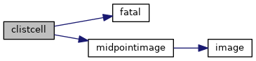
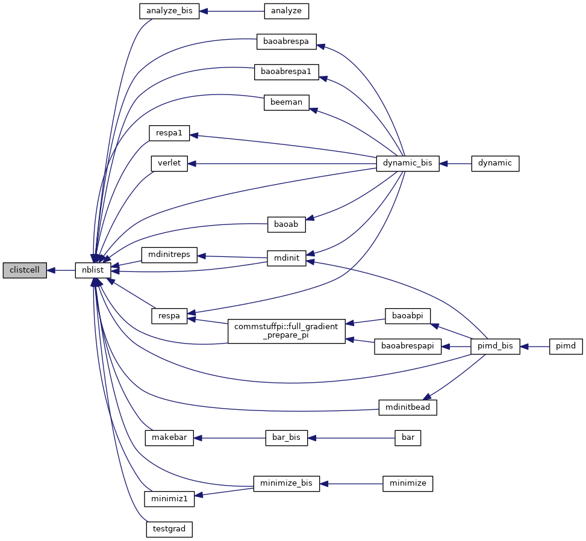
| subroutine clistcell2 | ( | ) |
performs a complete rebuild of the electrostatic short range and regular neighbor lists for charges using linked cells method
| [in] | istep,: | index of timestep |
Definition at line 750 of file nblist.f90.
References fatal(), and midpointimage().
Referenced by nblist().
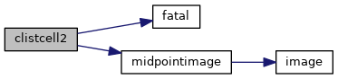
| subroutine dlistcell | ( | ) |
"dlistcell" performs a complete rebuild of the dispersion neighbor lists using linked cells method
Definition at line 1235 of file nblist.f90.
References fatal(), and midpointimagetriclinic().
Referenced by nblist().
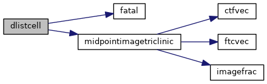
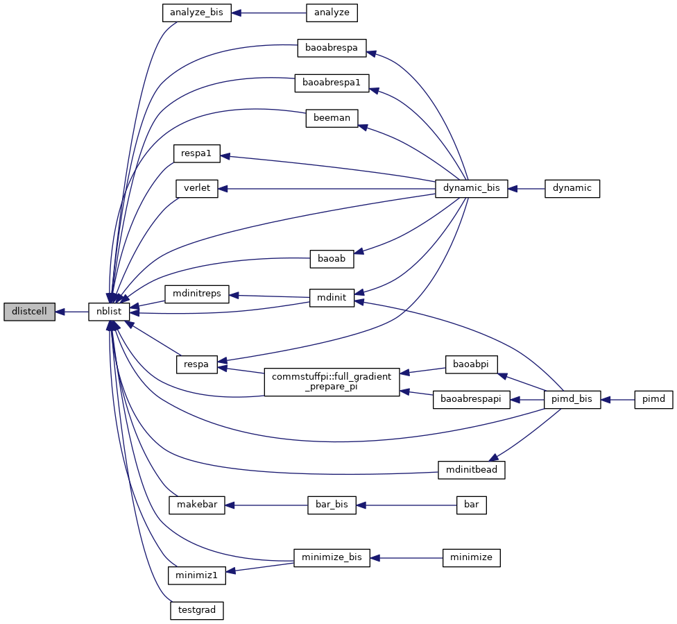
| subroutine dlistcell2 | ( | ) |
"dlistcell2" performs a complete rebuild of the dispersion neighbor lists using linked cells method
Definition at line 1372 of file nblist.f90.
References fatal(), and midpointimage().
Referenced by nblist().
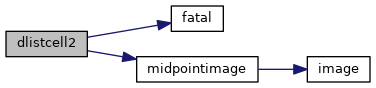
| subroutine imagevec3 | ( | real*8, dimension(n), intent(out) | imageout, |
| real*8, dimension(n), intent(in) | pos, | ||
| integer, intent(in) | n, | ||
| integer, intent(in) | i | ||
| ) |
Definition at line 1528 of file nblist.f90.
| subroutine initmpipme | ( | ) |
build the arrays to communicate direct and reciprocal fields during the calculation of the induced dipoles
| no | params |
Definition at line 418 of file nblist.f90.
Referenced by mechanic_init_para(), mechanic_up_para(), mechanic_up_para_respa(), and mechanic_up_para_respa1().
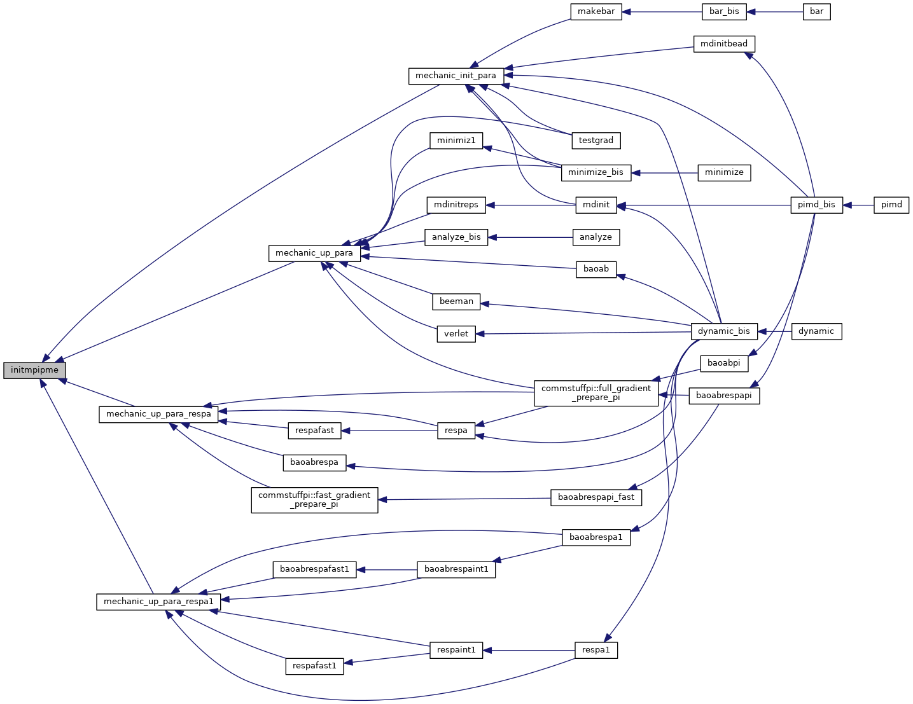
| subroutine mlistcell | ( | ) |
"mlistcell" performs a complete rebuild of the electrostatic neighbor lists for multipoles using linked cells method
| no | params |
Definition at line 122 of file nblist.f90.
References fatal(), and midpointimagetriclinic().
Referenced by nblist().
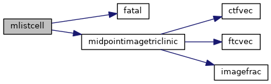
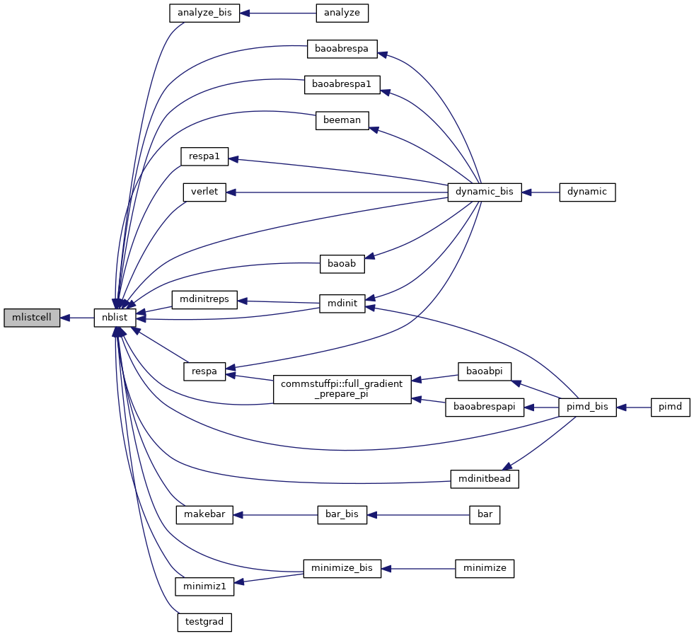
| subroutine mlistcell2 | ( | ) |
performs a complete rebuild of the short range and regular electrostatic neighbor lists for multipoles using linked cells method
| no | params |
Definition at line 266 of file nblist.f90.
References fatal(), and midpointimage().
Referenced by nblist().
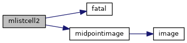
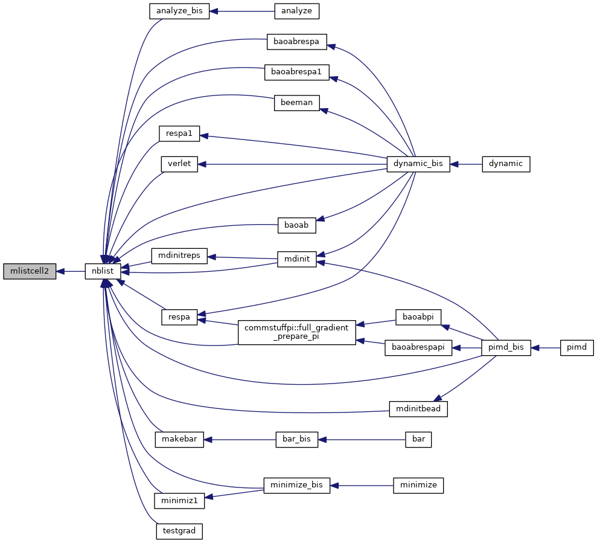
| subroutine nblist | ( | integer | istep | ) |
constructs and maintains nonbonded pair neighbor lists for vdw and electrostatic interactions
| [in] | istep,: | index of timestep |
Definition at line 21 of file nblist.f90.
References clistcell(), clistcell2(), dlistcell(), dlistcell2(), mlistcell(), mlistcell2(), vlistcell(), and vlistcell2().
Referenced by analyze_bis(), baoab(), baoabrespa(), baoabrespa1(), beeman(), dynamic_bis(), commstuffpi::full_gradient_prepare_pi(), makebar(), mdinit(), mdinitbead(), mdinitreps(), minimiz1(), minimize_bis(), pimd_bis(), respa(), respa1(), testgrad(), and verlet().
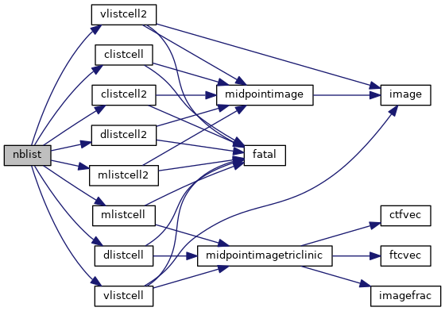
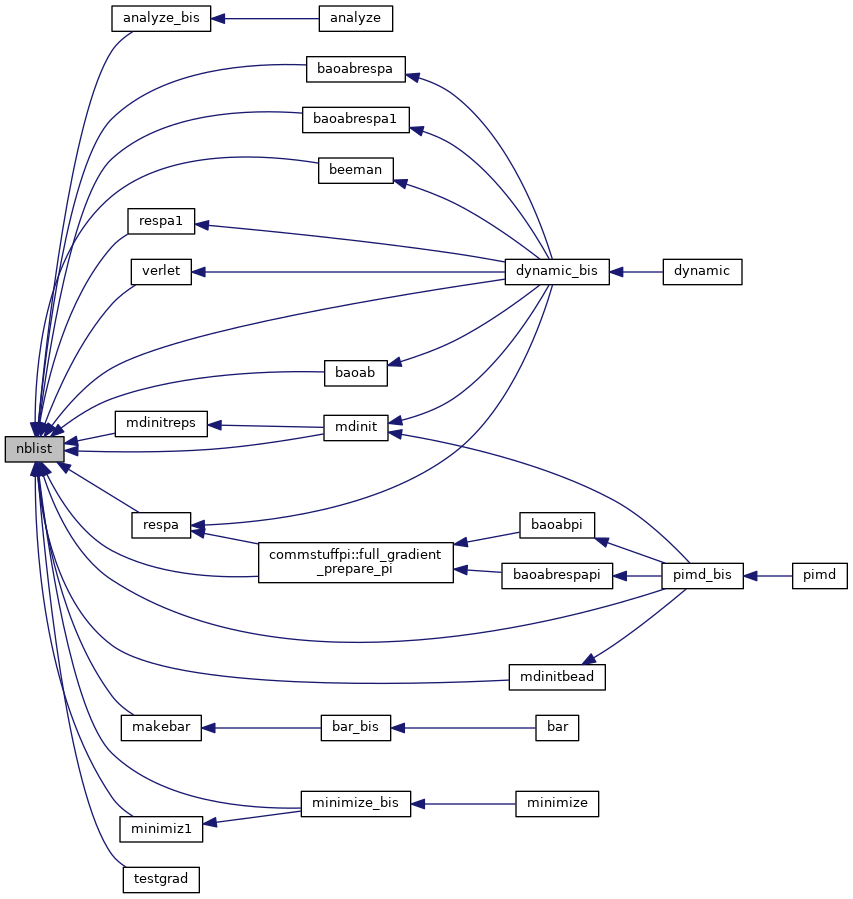
| subroutine reinitnl | ( | integer | istep | ) |
get the number of particules whose nl has to be computed and the associated indexes
| [in] | istep,: | index of timestep |
Definition at line 577 of file nblist.f90.
References ddbuild().
Referenced by analyze_bis(), baoab(), baoabrespa(), baoabrespa1(), beeman(), dynamic_bis(), commstuffpi::full_gradient_prepare_pi(), makebar(), mdinit(), mdinitbead(), mdinitreps(), minimiz1(), minimize_bis(), pimd_bis(), respa(), respa1(), testgrad(), and verlet().
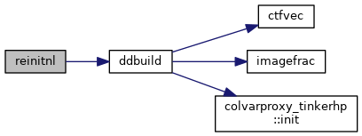
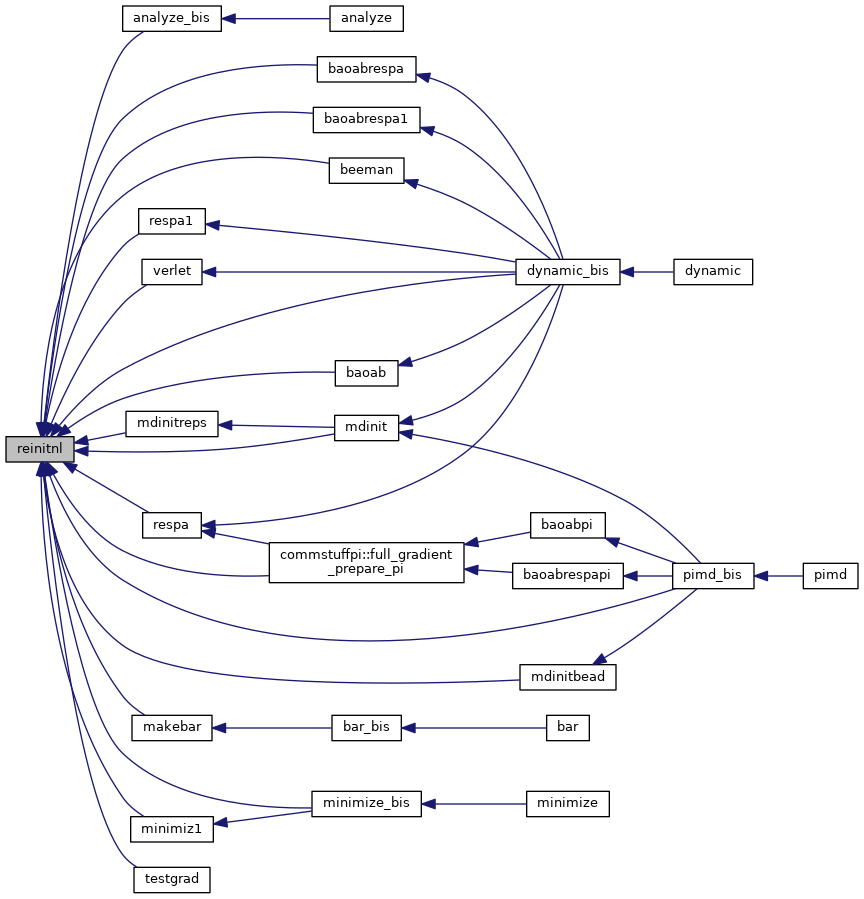
| subroutine vlistcell | ( | ) |
"vlistcell" performs a complete rebuild of the vdw neighbor lists for charges using linked cells method
Definition at line 897 of file nblist.f90.
References fatal(), image(), and midpointimagetriclinic().
Referenced by nblist().
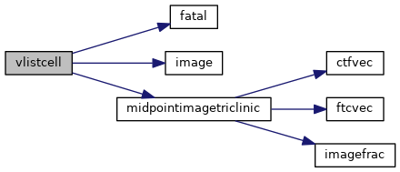
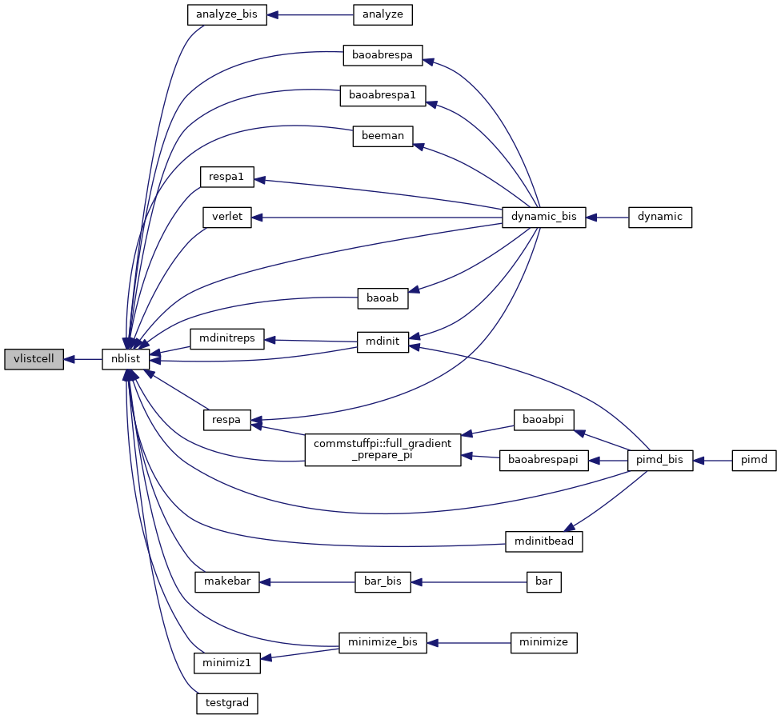
| subroutine vlistcell2 | ( | ) |
"vlistcell2" performs a complete rebuild of the short range and regular vdw neighbor lists for charges using linked cells method
Definition at line 1061 of file nblist.f90.
References fatal(), image(), and midpointimage().
Referenced by nblist().
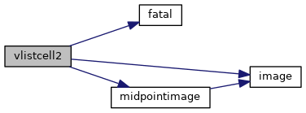
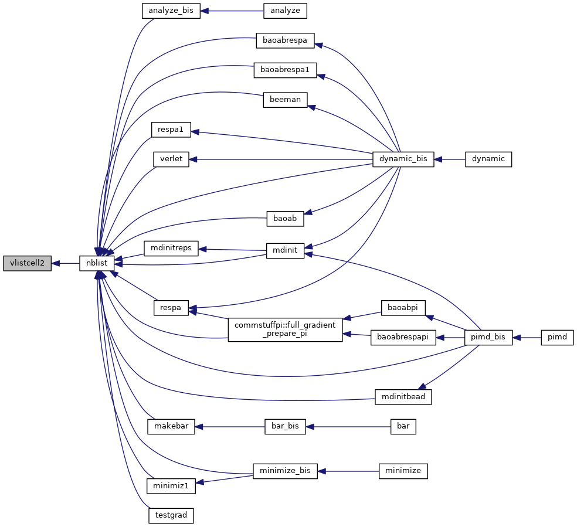
 1.8.5
1.8.5